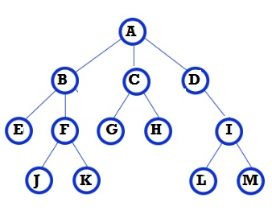

What is Crypto adoption? and how do we get there?
If you have been in the cryptocurrency world for more than a few days you may have heard the term ‘adoption’ being thrown around. In this article I will try to summarize what that word means in the context of cryptocurrencies, what are the features required for it and how to implement them into the Ark ecosystem.
In Blockchain We Trust
Before we discuss adoption it is important to first understand what blockchains offer and why they are such a revolutionary idea. Contrary to popular belief the only service that a blockchain provides is the automation of trust. Essentially what this means is that if you use a blockchain with appropriately designed incentive mechanism then you don’t have to trust an intermediary be it a bank or an escrow agent etc. Instead instead you put your trust that the blockchain protocol executes the agreed upon instructions properly. These instructions can be designed to track token creation and their transfer among participants of the network, or they can be designed to perform some complex task as required. All you need to be guaranteed that the instructions were executed properly is to participate in the network by running a full node or sometimes called a relay node. If you run a node in a blockchain network, you can rest assured that the data represented in your copy of the blockchain is the same as the data on majority of participants in the network. All the use cases of blockchains including cryptocurrencies are made possible due to this automation of trust. If you don’t need a trusted intermediary then you don’t need to pay excessive fees to the intermediary and you don’t give them power over yourself which they can choose to take advantage of and exploit for personal gain. This ability to disintermediate any kind of process is what makes the blockchain such a revolutionary idea and gives it the potential to be an even more disruptive technology than the internet.
Disruptive Technologies
New technology always enables new use cases by reducing friction and allowing people to do things that were not sustainable before. Accompanied with these new use cases is the disruptive effect they have on existing infrastructure. For instance one of the earliest examples of technological disruption is the ice harvesting industry or more commonly known as the ice trade (yes, that was a thing). Before the second industrial revolution the only way to have ice in the warm season was for someone to go to a frozen lake in the winter, cut out huge slabs of ice from the frozen lake and store them in a warehouse covered by several layers of insulation which would be brought out during summer and sold to buyers. At it’s peak, during the 1890s, the industry employed 90,000 individuals and 25,000 horses in the United States and capitalized roughly $28 Million market value (roughly $800 Million dollars in today’s value). However this industry is non existent today because of the proliferation of one single invention: Household refrigerators. If you could use electricity at your house and easily create ice yourself then why would you need to ship ice across the continent and pay for the expensive labour costs of harvesting it and bringing it to you? When an individual bought a refrigerator they removed nearly all the intermediaries in the process of procuring ice and this new technology was simple to use so it became ubiquitous over time. Similar disruption happened to the transport industry when automobiles replaced horses since they provided more power at a cheaper cost by removing the intermediaries such as horse trainers, breeders, and traders. Additionally cars were easier for the normal person to learn and use reliably since they didn’t get tired and didn’t have a temper despite abuse. The final industry that’s worth mentioning is the supply chain industry which continues to be disrupted by Amazon today. When anything can be bought online and shipped to your doorstep then there remains little reason to go out to an intermediary physical store to buy a product. The rapid growth of Amazon’s increasing sales revenues and the demise of it’s conventional competitors reflect that fact. However it is important to note that in all of the above examples the number of intermediaries decreased but there were still some intermediaries. Blockchain promises to change that and make the entire structure completely flat. If you have the ability to produce something then a blockchain can be used to sell your products directly to the customer without having any third party in between and this will disrupt the entire economic landscape of the world starting from banks to giant conglomerates. Cryptocurrencies are just the first phase of this revolution in which conglomerates die and individuals thrive by providing services and products to their peers at competitive, near-zero, marginal cost.
Crypto Adoption
Now let’s come to the topic: What does cryptocurrency adoption mean? The answer to that question is simple in light of the previous section. Cryptocurrency adoption is the disruption of conventional economic paradigms. We already saw a small part of that in the form of ICOs last year where entrepreneurs could circumvent the established system that’s designed to benefit intermediaries. These entrepreneurs raised massive amounts of capital for their ventures while at the same time providing the early investor common man returns on investment that were exclusive to a few people who were already millionaires just years before. However that was just a glimpse of the full potential of crypto. In a world where crypto has seen massive adoption we will observe that nearly every economic transaction is done using a blockchain but the user experience has been made so simple that most of the users doesn’t even know that they are using it. In a world with such ubiquity a common user holds their wealth in a popular currency which is stable in price. This stability comes either as the effect of massive market capitalization and liquidity or as the effect of log-like price discovery models being used to exchange it. These users can interact with any service within an extended internet of blockchains that spans every known cryptocurrency. Even though these services require a native token to be used in exchange for the service, the average user is unlikely to expose themselves to the risk of holding these tokens and will likely use them by exchanging the main reserve currency automatically and easily into the required utility tokens. It’s unlikely they will even see how many of the native tokens were even required for the service and instead just see the cost in terms of their reserve currency of choice. Additionally there will be some enthusiasts and traders that will expose themselves to that risk because they use the service very frequently or they want to gain profits from the price movements due to utility token’s demand and supply.
Before we can get to the vision detailed above we need to solve some technical and design challenges. In order for cryptocurrencies to be disruptive to their full potential as described in the previous section they need to be:
- Easy to use
- Scalable
Scaling
Normally when someone utters the word “scalable” they are referring to increasing the transaction throughput that the network can support. However, I think that scalability has several factors. For a netowrk to be truly scalable it needs to ensure that it is consistently able to provide the following guranatees despite the number of users ranging into billions:
- The network should remain able to process the transaction throughput
- The network should remain easy to use
- The network should remain secure
If any of the above points don’t hold true anymore while servicing an exponentially growing userbase then the network is not scalable. We have already discussed how to enable the Ark ecosystem of blockchains to scale in terms of transaction throughput using liquidity gates so we will not discuss it here again. However we will discuss in the later sections how the other two aspects can be guaranteed using AIP23.
Friction
An important perspective to have when understanding the other two types of scaling is to understand the difficulty of providing a particular guarantee also known as Friction. If it’s difficult to provide a guarantee about a service’s usability as the number of users increases then the service is by definition not scalable. However if the service becomes difficult to use or insecure as the number of users increases then it’s not scalable either. This aspect of scalability is often ignored and I would like to explain it’s importance in context of Ark.
Friction in Transactions
Scaling to process an increased number of transactions per second is an obvious form of scaling. The friction involved in this process is that of limited bandwidth, processing power and disk space. As we have already discussed this type of scaling using a network of interconnected blockchains using liquidity gates we will not go into it further.
Friction in Ease of Use
In context of Ark if a developer wants to launch their service on the platform they currently need to reach out to people already familiar with Ark and convince them to run a delegate and become a service provider for their blockchain network. This involves back and forth communication to negotiate an appropriate reward for the delegate either in the form of existing supply of tokens or in the form of promising future value of tokens. Additionally the delegates might be wary of servicing a bridgechain if they are not convinced that the network’s token will have a significantly increased value in the future. The task of running a fledgling blockchain network thus becomes a risky gamble on the future price of the network asset rife with risk. If we compare this process to the Ethereum or other networks such as EOS, TRON etc it’s clear why they have more developer interest despite having difficulties scaling up in terms of transaction throughput. A developer in these networks can just release their application without any sort of back and forth trying to convince the network’s miners or delegates. All that is needed is the right amount of fee to host and run the application. This model turns the miners and delegates into service providers who don’t care about the speculative nature of the new application. These service providers will continue hosting the service as long as the application pays them the due rent. In such a model the app developer is happy as they can easily launch their app and the miner/delegate is happy as they get paid for the apps they host. Coming back to Ark, could you imagine if we keep the current process of launching a service how it would fare 5 years down the line with millions of users. The top delegates would get thousands of requests to forge on their network everyday and have no way to cope with the sheer number, while many developers would be complaining about not being able to find good delegates to service their chain. This is a big problem and AIP23 intends to solve it by turning the main Ark chain into a Delegate Market for the entire ecosystem.
Friction in Security
An additional hurdle in the current economic model that Ark uses is that the newly created chains don’t have a good way to keep themselves secure since their market capitalization is too small and anyone can buy them out and shut down the network. Not only this but the holders of the main chain’s token are likely to circumvent the main chain as soon as another one of the bridgechains gets listed on a big exchange and has liquidity. Furthermore people already realize this fact and will be willing to spread out their holdings between the different chains they expect will succeed to reduce their risk and at the same time bring in profits. As a result of this behavior we are likely to see an almost even spread of market capital between all the Ark ecosystem bridgechains including the main chain. This has the drawback that each of these bridgechains is N times easier to attack for a malicious entity by buying out votes where N is the number of successful chains in the ecosystem. Since Ark takes a multi-chain scaling approach, as the number of users grows the number of bridgechains also grows and as a result the value is split between all of them. It should be obvious how that decreases security of the network as early investors become more and more capable of taking over any of the chains in the network. Therefore in it’s current model the Ark ecosystem cannot scale in terms of security. However with the introduction of a Delegate Market most of the value will be retained on the main Ark chain and as a result it will gain value as the ecosystem becomes bigger and since the delegates are chosen on the main chain every bridgechain has the same high level of security.
Delegate Markets
Now that the benefits of having a delegate market are clear we can discuss how the delegate market will actually work.
Mechanism
Each individual or group of people that wishes to become a delegate on any chain in the Ark ecosystem will have to register as delegate on the main chain. People will vote for these individuals according to the current model. The top 51 delegates will be chosen to forge on the Ark main chain. The delegates at spots 52 onwards will run a relay for the main chain and as well as a forging node on the bridgechain with the next highest valued hourly blockrewards and so on. This makes it so that the higher ranked delegates who are trusted more by the community will service the main ark chain whereas the delegates who are ranked lower will service a network that doesn’t produce as much value for the delegates in the form of payouts.
Maturity
As new chains are added they will initally use the main chain as their delegate market. However once the main chain reaches capacity the child chains would have reached maturity as well and they will be able to serve as delegate markets for the new chains being created then. In this way the eventual ecosystem will look like a tree datastructure with the Ark main chain serving as it’s root.

Point Click Utility
Up until now Ark has focused on creating a platform where people can easily deploy a blockchain. This goal has been symbolized in the “Point Click Blockchain” slogan. This goal is almost complete and I would suggest taking on a new slogan after this: “Point Click Utility”. As in the blockchain is useful immediately after deployment without the need for additional effort trying to recruit delegates and worry about security. Any developer who wants to deploy their application using the Ark ecosystem should find it easy to deploy their blockchain but they should also find it easy to find delegates that will host their application as well as maintain it and keep it secure.
Conclusion
Disruptive technologies are able to break the mould of everything that exists before them and enable new kinds of applications. However these disruptive technologies must have the right architecture to be able to scale in all three aspects of throughput, usability, and security. If any of these aspects is ignored then the exponential increase in users will be halted and the adoption will regress instead of continuing. Delegate Markets as explained in AIP23 offer one way to solve the problem of scaling usability and security. If you would like to see this AIP adopted then please let the Ark team know. Additionally if you like the work I do then consider voting for delegate mak. I hope that together we can continue disrupting the world and making it a better place for everyone. Thanks